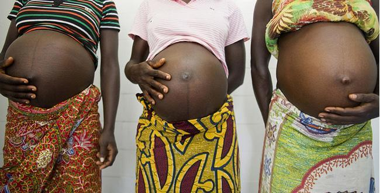

ABOUT US

Live LIfe is a non-profit organization based in Africa that seeks to provide the
female teenage mothers the opportunity to enjoy life despite
their early motherhood.
Adolescent pregnancy is an important social and public health issue worldwide, and it is linked to several social and economic consequences.
Statistics and data reveals that, The average age of study participants was 16.9 ± 1.15 years.
Place of residence, occupation and economic status were found to be associated with adolescent pregnancy. Multiple logistic regression revealed that adolescents from urban settings, Abesim zone (OR = 0.07, 95% CI 0.01–0.35), and New Dormaa zone (OR = 0.19, 95% CI 0.05–0.77) had decreased odds of adolescent pregnancy compared to their rural counterpart-Antwikrom zone. Adolescents were also at increased odds of becoming pregnant when they were into apprenticeships (OR = 9.77, 95% CI 2.00–47.75) or unemployed (OR = 11.69, 95% CI 4.47–30.58) than being in school. Adolescents with low economic background (OR = 4.05, 95% CI 1.43–11.52) were 4.1 times more likely to get pregnant compared to those with high economic status.
Key factors associated with adolescent pregnancy have been established and these need attention from all stakeholders to forestall public and social health safety among adolescents.
Due to the increasing cases of teeange pregnancy among the adolescents ,LIve Life came up with this
idea of assisting early teeange mothers access the freedom and right of being a teenager.
MOst of the times when teenage get pregnant in African countries they mostly ignored by their
family and society as well as dropping out of school.Rigts and privileges such us ; right to education is mostly not enjoyed by the teenager
which has a tremedous effect on the society at large.